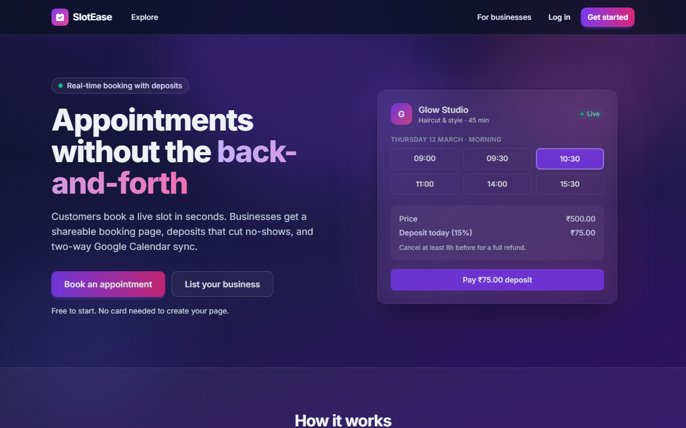

Full-stack SaaS · Payments · Real-time
SlotEase: appointment booking
The problem
Salons and clinics lose money to no-shows, double-bookings and endless "is 4 pm free?" messages.
What I built
A multi-business booking platform. Owners get a public booking page, staff schedules and a live dashboard. Customers pay a 15% deposit through Dodo Payments, and Google Calendar syncs both ways.
The result
A slot vanishes from other browsers the moment it's booked, and the database itself refuses double-bookings. Refunds follow the business's own cutoff rule.
FastAPIReact + TypeScriptPostgreSQLWebSocketsDodo PaymentsGoogle OAuthDocker